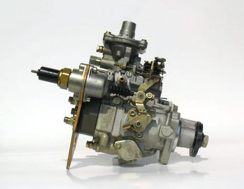

A képen a Bosch forgóelosztós rendszerű adagolócsalád alaptípusa, a VE látható. Ezzel a teljesen új mechanikus, hidraulikus kialakítással egy új korszak kezdődött a diesel befecskendezés területén.
Ezen a - PSA motorokba beépitett - típuson is már sok kiegészitő berendezés figyelhető meg.
A képen a Ford Transit 2. 5D direkt befecskendezésű motorjának mechanikus szabályozású adagolója látható. Érdekessége, hogy az adagoló mindenkori fordulatszámmal arányos, belső tápszivattyú nyomással állított mennyiség szabályozást alkalmazza. Ez a VE adagoló turbó tornyába került beépítésre.
A képen az egyik legtöbb darabszámban gyártott, Bosch EDC HDK kivitelű, elektronikusan szabályozott adagolója látható. Érdekessége, hogy a felszereléskor beállítandó alapelőtöltés értéke, az adagoló meghajtótárcsa stiftelésével kerül beállításra. A meghajtótárcsa beállítása, rögzítése az adagoló tengelyére, indikátoróra segítségével történik.
Értéke, pozíciója a beállítási próbalapon található meg.